8.4 目标跟踪（上）——DeepSORT原理
前言
目标跟踪技术可以用于人流量计数和车流量计数等，能够帮助人们更好地了解和掌握一个地区的交通状况和人流状况。这些计数功能有以下几个价值和意义：
- 交通规划：通过了解车流量，可以更好地规划交通路线和疏导车流，提高交通效率，减少拥堵，从而减少交通事故的发生。
- 商业决策：通过了解人流量，可以更好地了解商业活动的热点区域，从而制定更加有效的营销策略和经营计划，提高商业效益。
目标跟踪（object tracking）定义是，在视频序列中识别目标并赋予唯一标识，同时跟踪目标在视频序列中的位置。在自动驾驶、监控、人机交互等领域都有应用。
目标跟踪常用的策略是TBD（Tracking-by-Detecton），又称DBT（Detection-Based-Tracking）。即在每一帧进行目标检测，再利用目标检测的结果来进行目标跟踪，这一步称为数据关联（Data Assoiation）。与之相对的，是DFT（Detection-Free Tracking）， DFT使用较少。
根据目标的数量，目标跟踪可分为单目标跟踪（Sing-Object Tracking）与多目标跟踪（Multi-Object Tracking），目前MOT研究较多，并且MOT可覆盖SOT。
根据处理时效性，又可分为在线跟踪（Online）与离线跟踪（Offline），离线跟踪是指可以使用后续帧的信息来预测当前帧，在视频分析中可用。在线跟踪是只能采用前序帧信息与当前帧信息，这是目前主流方案。
本案例中的目标跟踪属于多目标跟踪、在线跟踪、TBD。
通过简单定义，可以知道，目标跟踪分两步
- 检测：找出当前帧中的目标，即目标检测
- 关联匹配：将当前目标与历史帧中的目标进行关联与匹配
检测可以采用各类目标检测算法，关联匹配可以采用deepsort算法。
本案例将详细介绍DeepSORT算法原理，并基于yolov5实现车流量统计代码。
DeepSORT算法流程
DeepSORT算法发表于2017年，其是SORT的改进版。SORT(Simple Online and Realtime Tracking)于2016年发表，主要基于卡尔曼滤波和匈牙利算法实现。
DeepSORT算法则是对SORT加入了Deep Association Metric进行特征提取与匹配，是目前精度与速度都不错的跟踪算法。
SORT论文速读：提出了基于卡尔曼滤波和匈牙利算法的目标跟踪策略，同时发现好的目标检测器，可以大幅度提升MOT精度，高达18.9个百分点。SORT实现分为4个步骤，分别对应3.1-3.4，目标检测模型得到目标框；采用卡尔曼滤波进行轨迹框的预测；采用匈牙利算法对目标框与轨迹框进行匹配；最后基于匹配结果，删除旧轨迹框，添加新轨迹框。（论文只有5页，核心内容第三章仅半页纸，但不妨碍它是优秀的工作）
DeepSORT论文速读：基于SORT，DeepSORT最大特点是引入了deep association metric，即采用CNN提取目标框中图像特征，来进行匹配。同时，涉及了级联匹配策略，有了更好的准入、准出机制，对目标的跟踪更精细、合理。
目标跟踪的过程相当复杂，为了能了解全过程，这里通过具体案例，一步一步发现问题，然后学习DeepSORT的解决方案，最后汇总。
为了将复杂的问题描述清楚，有必要对名词进行一些解释。
检测框（dets）：由目标检测模型输出的框，包含框的位置信息，物体类别信息，是该物体的概率信息
跟踪框（tracks）：跟踪模块认为是有价值的检测框。跟踪框中有两种，一个是正式框，一个是预备框。论文中称为confirmed, unconfirmed， 这里借鉴正式党员、预备党员的叫法，应该好理解一些。
预备框（unconfirmed）：潜在的跟踪框，只在算法内部记录，当达到一定条件，转为正式跟踪框，才能被算法输出，在屏幕上绘制出来。
正式框（confirmed）：目标跟踪算法的输出，回顾定义，目标跟踪需要在视频序列中识别目标并赋予唯一标识，即输出框应当包含检测框信息、唯一标识。
假设世界上没有目标跟踪算法，需要我们自己构思，需求是在在连续帧中将检测到的物体关联起来，实现目标跟踪。
现在有个行人跟踪任务，如图所示
第一帧：检测器只有一个检测框，因此赋予它唯一标识，再采用卡尔曼滤波算法进行跟踪框坐标的输出。
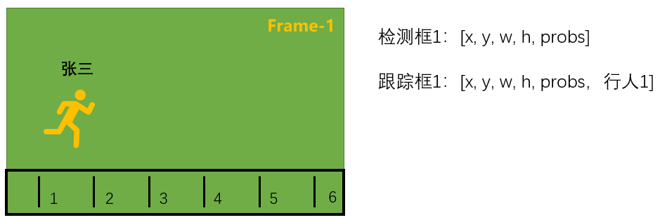
第二帧：检测器输出两个框，如何将2个检测框与1个跟踪框进行匹配，获得行人1在第二帧当中的跟踪框。这时可以借助匈牙利算法，它是求解任务分配问题的组合优化算法。
匈牙利算法可以很好的将检测框1与前序跟踪框1匹配上，然后对前序跟踪框1进行更新(采用卡尔曼滤波)，获得当前跟踪框1。
对于检测框2，没有找到与其匹配的前序跟踪框，所以认为它是新进入的，给它创建一个新跟踪框即可。因此，当前跟踪框应有两个。
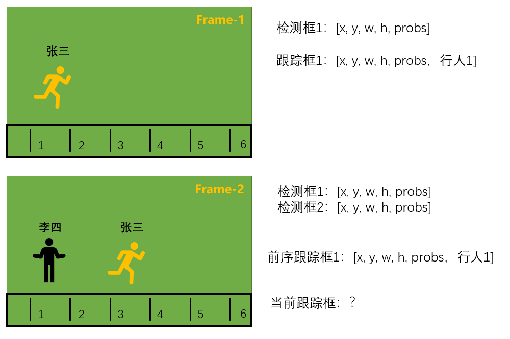
第三帧：又来了一个人，检测到了3个框，因此重复第二帧的任务，采用检测框更新采用卡尔曼滤波)跟踪框的信息，同时为王五注册新的身份ID——行人3。
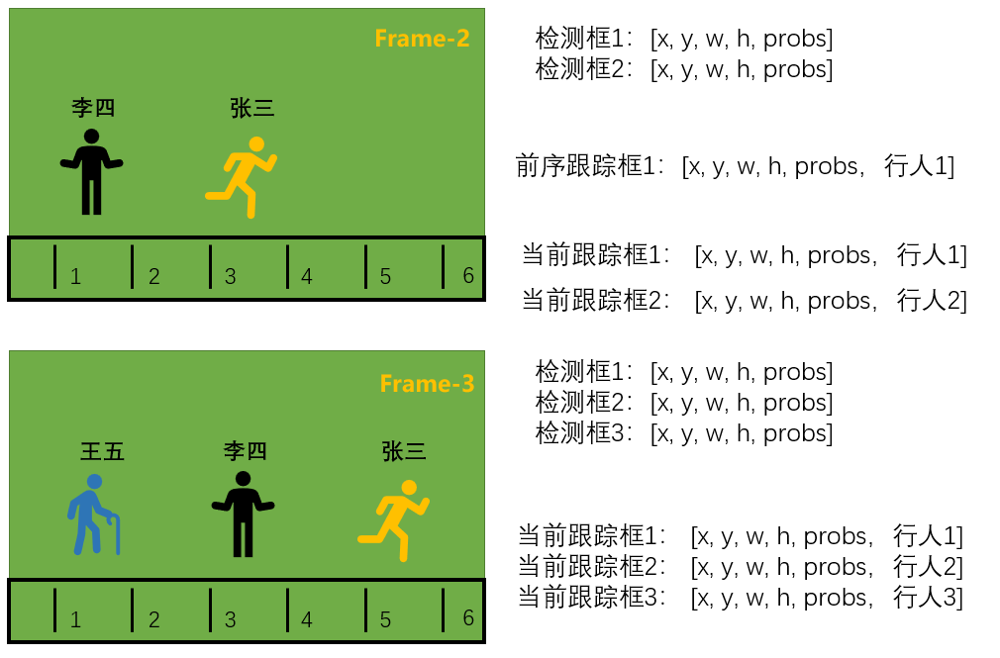
第四帧：张三离开了图像，检测器只检测到2个框，2个检测框去匹配3个跟踪框，自然会有一个跟踪框匹配不上，这里显然是行人1，因此没有匹配上的跟踪框需要被删除，最终输出两个跟踪框。
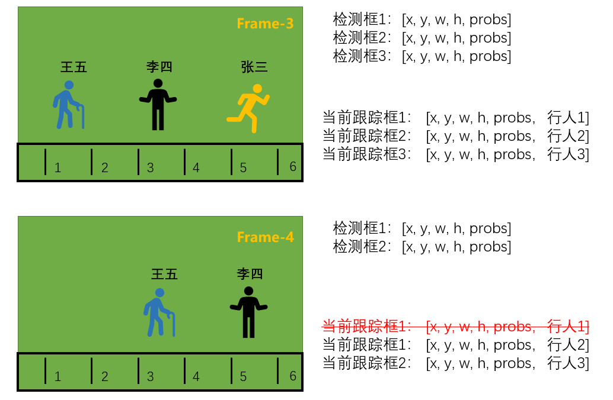
以此类推，新来检测框匹配已有跟踪框，匹配不上，则增加跟踪框，同理，已有跟踪框没有匹配到新的检测框，认为它离开了，需要删除跟踪框。
到这里，一个基础的目标跟踪框架出来了，有了新增跟踪框机制、删除跟踪框机制。这就是大名鼎鼎的SORT算法的流程，对于匹配细节和跟踪框的坐标更新
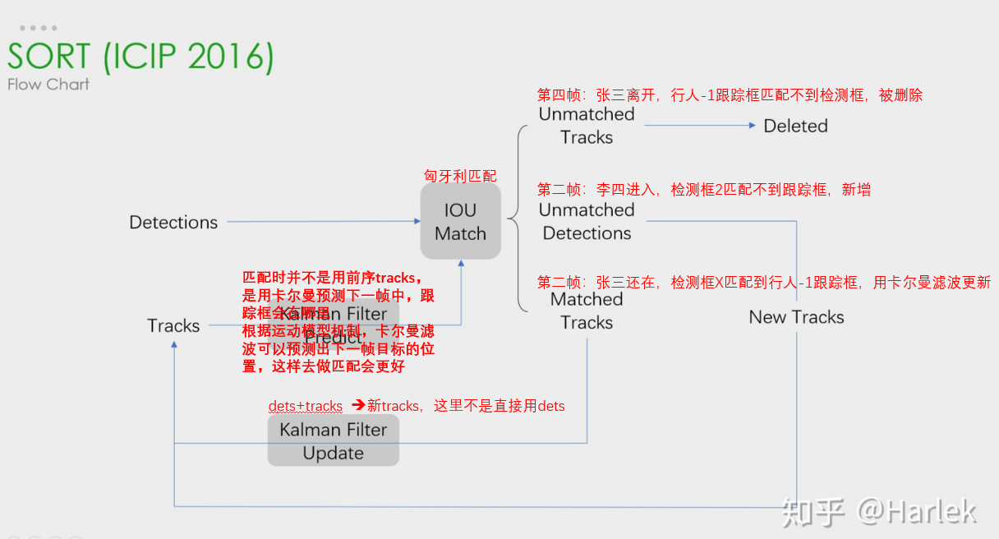
SORT很好的解决检测框如何与跟踪框对上号，同时有了新增、删除跟踪框机制，但是对于常见的问题没有得到很好的解决，例如：
- 检测器漏检：检测器在某一帧漏检是很常见的现象，假设第二帧中，张三漏检了，第二帧会将张三的身份ID——行人1给删除。第三帧中的张三将会被认为是新来的，无法匹配到他是行人1。
- 检测器误检：检测器在某一帧错误的将背景检测为了行人，根据SORT算法，会被背景赋予一个跟踪框，这是很不合理的。
为了让目标跟踪算法输出的跟踪框更稳定，DeepSORT引入了预备框、正式框机制，可以很好的解决漏检、误检带来的不稳定。
对于新增，要考察一下框是否是真的，通常用3帧的时间来考察，当发现框连续3帧都存在，那么认为它是一个好的框，算法批准框称为正式框。这样可以很好的过滤掉一些”没有耐心“的框。这样对于某一帧，某两帧的误检，是很好的过滤方法。
对于删除，要考察一下框是否真的离开，毕竟框也是经过了准入审查的，通常不会一瞬间就离开，此时给它连续30次机会，连续30帧里边发现它都不在了，将它永久开除。
综合上述理解，DeepSORT流程解释如下：
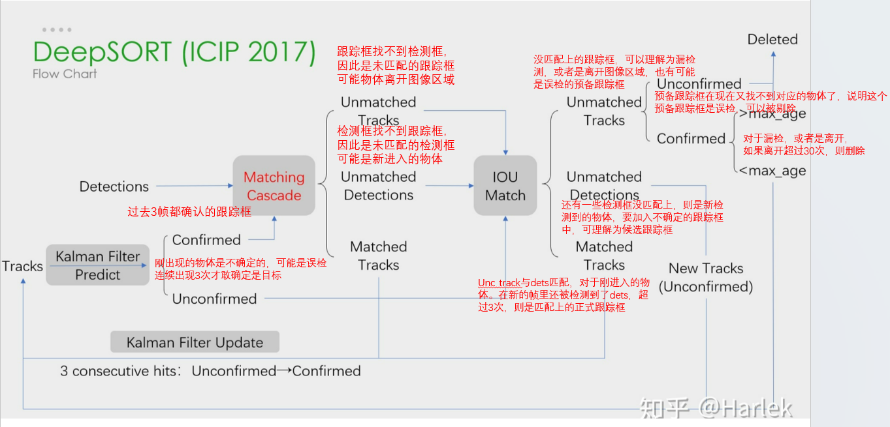
DeepSORT核心——匹配过程
匹配过程指的是，如何将检测框与跟踪框匹配上，让每一个检测框都能找到与之对应的跟踪框。若没有找到，则认为是新进入的物体，会创建新跟踪框。
deepsort的匹配过程分两部分。
首先，基于外观特征和马氏距离，为正式框进行匹配，方法是级联匹配（matching cascade），用到的优化方法是匈牙利算法。
然后，基于bbox坐标和IoU，为预备框进行匹配，采用剩余检测框与剩余跟踪框（未匹配和预备框）匹配，用到的优化方法是匈牙利算法。
外观特征与bbox坐标对应：表示的是对于一个物体，要用什么特征表示TA，是1128的向量？还是14的向量？
马氏距离与IoU对应：表示两个特征之间"相近"程度的衡量，只有衡量了两个特征之间的距离，后续才能用优化算法优化距离最短的匹配方案
匈牙利算法作用：将N个A与M个B，采用特征向量描述以及距离度量方法，可以得到N*M的距离代价矩阵，即A中每一个元素与B中每一个元素之间的距离。随后用匈牙利算法找到最优匹配。
级联匹配
级联匹配的思想是分70级进行匹配，级的概念指距离当前帧的远近，第一级（level）采用所有检测框， 和仅被记录了一次的正式框（if tracks[k].time_since_update == 1 + level），以此循环70次。
因为越新的目标，越有可能与检测框匹配上，存在太久的目标可能离开了。级联匹配可以解决一部分身份交换问题。
级联匹配中，传入了：
distance_metric：基于外观特征（CNN提取出来的512维特征向量）的举例度量函数
max_distance：当距离大于max_distance时，认为是不匹配的
tracks：跟踪框
detections：检测框
track_indices_l：本轮需要匹配的跟踪框的index
unmatched_detections：本轮需要匹配的检测框的index
# code/chapter-8/tracking/deep_sort/deep_sort/sort/linear_assignment.py 的matching_cascade函数
for level in range(cascade_depth):
if len(unmatched_detections) == 0: # No detections left
break
track_indices_l = [
k for k in track_indices
if tracks[k].time_since_update == 1 + level # 为每个跟踪框记录它被更新的次数，优先选择新跟踪框进行匹配， 1+0
]
if len(track_indices_l) == 0: # Nothing to match at this level
continue
# ============================ 核心部分：匹配 ================================
matches_l, _, unmatched_detections = \
min_cost_matching(
distance_metric, max_distance, tracks, detections,
track_indices_l, unmatched_detections)
matches += matches_l
级联匹配中采用的是跟踪框的历史特征列表与检测框进行匹配，如跟踪框已经检测到了18次，会得到18个特征向量，新的检测框有30个，则会得到18*30的矩阵。
然后在第0维选择最小值，得到1*30的距离矩阵，最终判断是否有匹配上的检测框。
Tracker --> _match() --> gated_metric() 下的：
cost_matrix = self.metric.distance(features, targets)
跳转到：deep_sort/sort/nn_matching.py 的 NearestNeighborDistanceMetric.distance()
cost_matrix = np.zeros((len(targets), len(features)))
for i, target in enumerate(targets):
cost_matrix[i, :] = self._metric(self.samples[target], features)
跳转到：
def _nn_cosine_distance():
distances = _cosine_distance(x, y) # 18*30的矩阵
return distances.min(axis=0) # 选择距离最小的特征； 如18*1，选择18个跟踪框中与第一个检测框距离最近的；以此类推得到1*30.
# 由此可见，检测框与目标的所有历史特征向量进行距离计算，挑选最近那个特征的距离作为评判距离。
级联匹配之后，会有未匹配的检测框，未匹配的正式框（如果被记录70次以上，是无法进行匹配的），以及预备框。
接下来用IoU测量检测框与跟踪框之间的相似性，很好理解，IoU越大，它俩越有可能是一个物体。
IoU匹配
IoU匹配的代码位于：code/chapter-8/tracking/deep_sort/deep_sort/sort/tracker.py 的_match()函数，
同理采用的min_cost_matching进行匹配，传入的有iou_cost度量函数，max_iou_distance用于过滤，跟踪框，检测框，需要匹配的跟踪框的index，需要匹配的检测框的index。
# Associate remaining tracks together with unconfirmed tracks using IOU.
iou_track_candidates = unconfirmed_tracks + [
k for k in unmatched_tracks_a if
self.tracks[k].time_since_update == 1]
unmatched_tracks_a = [
k for k in unmatched_tracks_a if
self.tracks[k].time_since_update != 1]
matches_b, unmatched_tracks_b, unmatched_detections = \
linear_assignment.min_cost_matching(
iou_matching.iou_cost, self.max_iou_distance, self.tracks,
detections, iou_track_candidates, unmatched_detections)
匈牙利算法
无论是级联匹配还是IoU匹配，最后都会用到min_cost_matching函数，其中匹配的核心代码是：
# code/chapter-8/tracking/deep_sort/deep_sort/sort/linear_assignment.py min_cost_matching()
row_indices, col_indices = linear_assignment(cost_matrix) # 匈牙利算法求解，得到配对的（raw, col）
这里使用了scipy库的linear_sum_assignment实现，可返回最优匹配的坐标，到底匈牙利算法是如何解决分配问题，下面进行介绍。
匈牙利算法是1955年美国数学家哈罗德·库恩（(W.W.Kuhn)），基于匈牙利数学家康尼格(D.Kőnig)提出的康尼格定理，提出求解二分图最大匹配的一种方法。
二分图（ Bipartite graph，二部图）是图论中一种模型，指的是有A，B两个节点集合，存在一系列边，边的两端不能再同一个集合，简单说就是A只能和B相连，反之亦然。
为了求解分配问题，需要对二分图中每种可能进行代价描述，称之为代价矩阵（系数矩阵、变换矩阵等等）。
下面借鉴视频中的内容，简要介绍匈牙利解决二分图最大匹配问题。
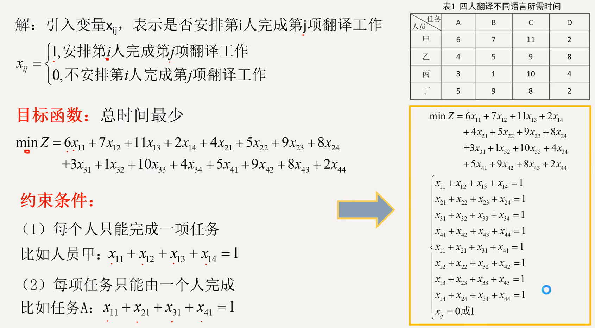
假设有一本说明书，需要翻译成4种语言，现在有4个人，他们对每个语言的熟悉程度不同，因此如何分配任务，就是一个典型的二分图最大匹配问题。
首先，可以根据任务进行量化，得到目标函数min Z。
然后，设置约束条件，一个人选一个语言，一个语言只能被一个人选择。
最后，得到右下角的方程式。
匈牙利算法实现步骤是：
- 画圈，划0：对代价矩阵每行减去最小值，使得其出现0；然后对列进行同样操作，使得其出现0；
试指派寻找最优解：0表示最优解，一行只有一个0的话，肯定优先考虑分配。
- 因此按行找仅有一个0的行，并且分配，分配之后，行已经被分配，因此对应的行需要删除。
- 同理对列操作。
- 若还存在没有标记的0元素，且找不到独立0元素的行(列)，从剩余0元素最少的行(列)开始，比较这行0元素所在列中0元素的数目，选择0元素最少的那列的这个0元素画圈，同时划去该行该列其余0元素。（如绕口令一般，这里推荐看视频）
打勾，画圈：没有画圈的行打√，打勾行含划0元素的列打√，打√列含画圈0元素的行打√，未打√的行画横线，打√的列画竖线。
- 增加0元素：寻找未被直线覆盖部分的最小元素，打 √的行减最小元素，打 √ 的列加最小元素。
- 重复执行2-4，直到找到n个位于不同行不同列的0元素。
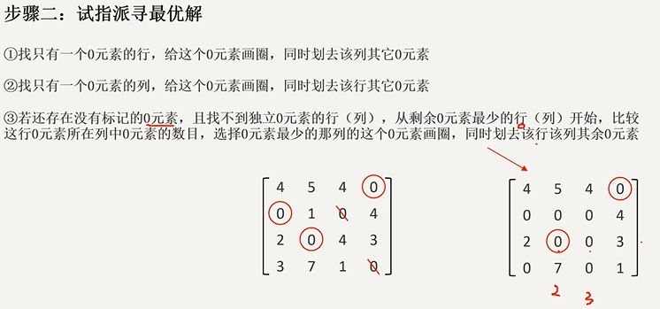
其核心思想是用增广路求最大匹配，这里的行列操作实际是将增广路的思想转换为矩阵的表达，因此单纯观察匈牙利算法的矩阵解法，是很难理解其原因，建议通过图论、运筹学的基础知识去了解匈牙利算法求解过程。
更多目标跟踪中的匈牙利算法讲解推荐：
代码细节：
对于代价矩阵，行是tracks， 列是dets，匹配上的框才会有index返回。
DeepSORT核心——更新输出过程
卡尔曼滤波
由于目标检测算法的不稳定，直接用目标检测输出的检测框来表示目标位置的精度不佳，常常会看到框的抖动。
为了让框更稳定的描述物体的位置，deepsort中采用了卡尔曼滤波算法（Kalman filtering）来对目标位置进行输出。
卡尔曼滤波算法是斯坦利·施密特(Stanley Schmidt)在1958年提出的，当时要解决的是阿波罗飞船的导航问题，可以用于估计飞船的位置，是一个很好的运动估计。
随后，卡尔曼滤波广泛应用在天文，宇航，气象等领域。
卡尔曼滤波可以解决的核心问题是，在一个线性动态系统中，可以基于历史信息与当前输入信息，很好的估计当前最优信息，当前最优信息就是卡尔曼滤波的输出，它可以很好的过滤掉噪声（必须是高斯噪声）。
这里的历史信息，可以理解为跟踪框（tracks）（上一帧），当前输入信息是目标检测算法输出的检测框（dets），而当前时刻deepsort要输出的目标的位置，是dets+tracks经过卡尔曼滤波算法的输出，即一个当前最优信息，是一个预测的、估计的值。
为了对卡尔曼滤波有进一步认识，这里简要介绍卡尔曼滤波思想和概念。对于细节，推荐阅读图说卡尔曼滤波，， 从放弃到精通！卡尔曼滤波从理论到实践~
这里借用视频中的公式进行讲解过程，公式中更细节内容，可以参考卡尔曼滤波的五大公式
x：观测对象，例如卫星的坐标，图像中目标的坐标，水壶中的温度等。
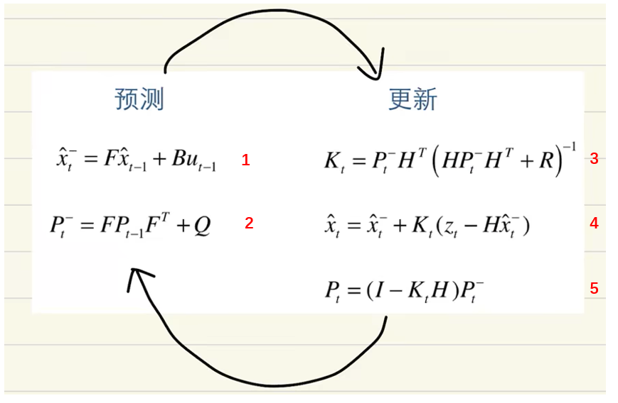
x：观测对象，例如卫星的坐标，图像中目标的坐标，水壶中的温度等。
t：表示时刻
-：表示估计值
^：表示估计，由于x都是带着^的，这里可以不加以区分
F：状态转移矩阵
P：协方差矩阵
K：卡尔曼增益，用于权衡，历史信息与当前输入信息的重要程度。
对于目标跟踪算法的输出，是公式4，公式4也是最核心的内容，其余公式都在为公式4服务的。
为了理解公式4，借鉴文章如何通俗直白地理解卡尔曼滤波算法的讲解。
假设，有两台电子秤，分别进行测量一瓶水，得到的结果如图所示。
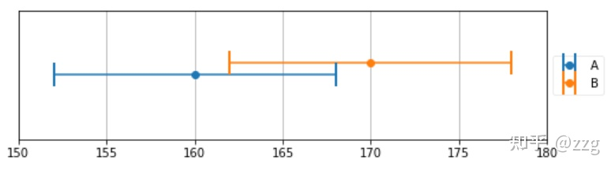
由图可知，电子秤不是绝对精准的，存在一定误差，不过当前观测值分别是160和170，那么如何融合两个数据？ 最简单的是 M = (A+B)/2 = 165。
求平均的设想里，有一个重要前提是，认为A和B的贡献是一样的，重要程度是一样的，因此各占50%的权重。
如果，A的精度更高，B精度差一些，即A的方差小一些，B方差大。这时，平均就不合适了，应该让精度高的观测值的权重更高。
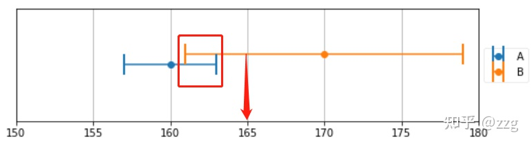
权重的计算，需要考虑谁更重要，即方差更小，所以可以通过方差的比较获得权重分配。
A 测量结果 为 160 +- 3， B 测量结果 为 170 +- 9，可知A 的测量结果精度是 B 测量结果精度的 3倍。
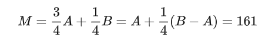
这个公式是理解上述公式4的关键，通过将A提取出来，变为单独一项，就可以很好的衡量，基于A，要如何变更，得到最优估计值。
这里的变更加号的右边，B-A乘以一个权重，这个权重就是卡尔曼滤波中的卡尔曼增益K。其中B就是目标检测算法输出的dets，A是tracks。
而卡尔曼增益K的计算，需要依靠协方差矩阵P。
DeepSORT 小结
到此，总结一下卡尔曼滤波过程，当前帧跟踪框的信息由卡尔曼滤波器在更新阶段输出。
更新阶段需要使用到：当前帧检测框， 基于上一帧跟踪框的预测值，并且加权得到。
其中，上一帧跟踪框的预测值来自公式1。代码中是： self.tracker.predict()。
有了基于上一帧跟踪框的预测值，再输入dets，就可以得到当前帧跟踪框信息，代码中是： self.tracker.update(detections)。
在代码中，卡尔曼滤波器维护mean和covariance，分别表示公式中的预测值x，协方差矩阵P。
self.mean, self.covariance = kf.predict(self.mean, self.covariance) # mean即bbox的坐标数据
self.mean, self.covariance = kf.update(self.mean, self.covariance, detection.to_xyah())
到这里，deepsort原理有了大概的描述，更多细节仍需要到代码中观察，这里做一个简要回顾。
跟踪框的输出：
为了更稳定，采用了卡尔曼滤波算法，将当前帧检测框信息，结合卡尔曼滤波对当前帧的预测，两者共同作用，得到输出。
目标的匹配：
为了让检测框找到对应的，合适的跟踪框，把它转化为二分图最大匹配问题，可以用匈牙利算法很好的求解。
同时，为了匹配更精准，减少身份交换，deepsort先进行新目标框的匹配（仅限前70级，级表示被跟踪的次数），然后再进行基于IoU的匹配。
跟踪框准入准出：
为了避免漏检、误检等短暂的不稳定因素，设计了预备框和正式框的概念。经过3次考验，可转正，经过30次机会仍不靠谱（未检测到），开除X籍。